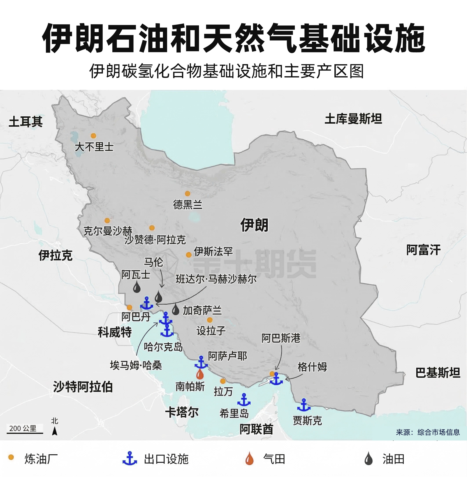

当前在途船舶
--
截至 --
数据来源：Hormuz Strait Monitor。
更新时间（北京时间）：--
正在载入最新的通行趋势。
当前在途船舶
最新 24 小时通行
UKMTO/JMIC 最新日通行
相对 3 月 1 日起点
来源：英国联合海事资讯中心（JMIC/UKMTO）。
来源：Windward数据。
来源：战争研究所 (ISW) 等。

把“通行量收缩”映射到主要品种的供应链暴露度。